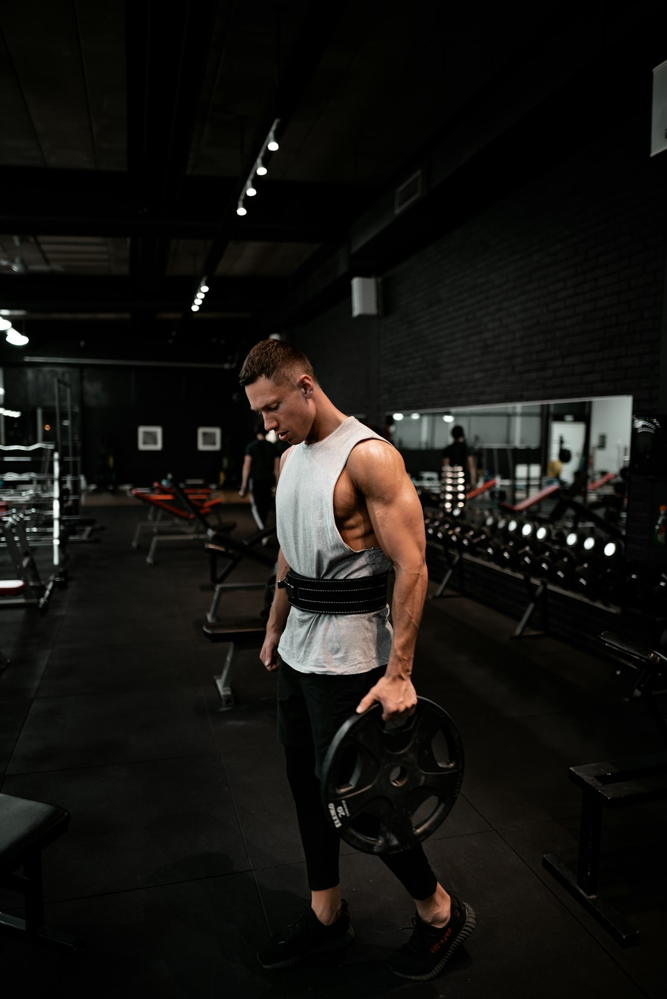
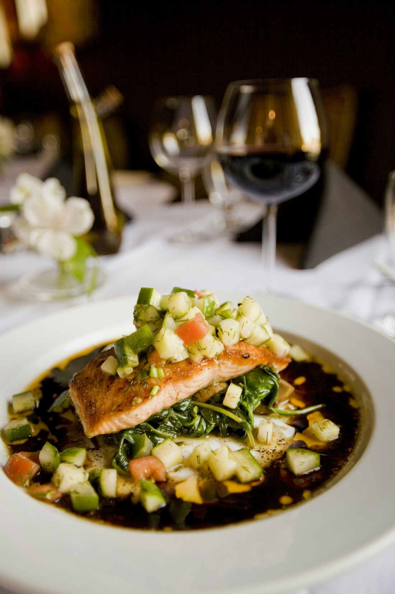
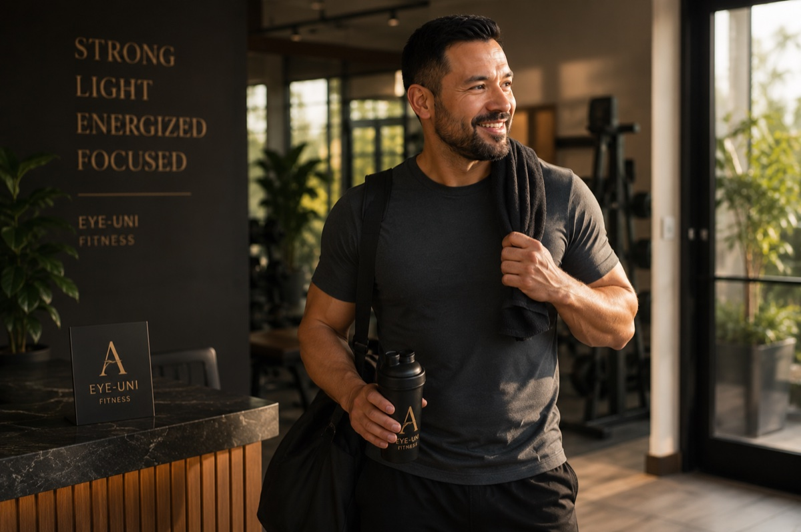

Lima, Perú · Desde 2013 · Coaching online
Pierde grasa. Sin vivir en el gimnasio.
Un sistema para hombres +30 que quieren volver a sentirse fuertes, ligeros y con energía — y mantenerlo.

¿Es para ti?
Es para ti si
- Tienes +30 y quieres recuperar tu forma.
- Ya lo intentaste solo y no se sostuvo.
- Quieres algo sostenible, no una dieta milagro.
- Tienes poco tiempo y necesitas un plan claro.
No es para ti si
- Buscas una transformación milagro en 30 días.
- Quieres vivir dentro del gimnasio.
- No estás listo para ser constante.
- Buscas atajos en vez de un método.
Cuatro fases. Un método.





El marcador no miente.


“Volví a reconocerme — y esta vez no lo recuperé.”
— Carlos, 41 · −14KG
Cada semana que esperas es una semana que no recuperas. El mejor momento para empezar fue ayer. El segundo mejor es hoy.


Un coach en tu esquina.
13 años ayudando a hombres +30 a recuperar su forma sin poner su vida en pausa. No creo en dietas de castigo ni en rutinas imposibles — creo en un método que encaje contigo y que puedas sostener.
“No te prometo abdominales en 30 días. Te enseño a mantenerlos toda la vida.”
— Jose Aguirre
Bajé 12 kilos sin dejar de salir con mis amigos. Por fin algo que puedo mantener.
— Diego, 38 · −12KG
Pensé que a mi edad ya era tarde. Me equivoqué. Hoy tengo más energía que a los 25.
— Martín, 44 · +ENERGÍA
Entreno 3 veces por semana, como normal, y sigo bajando. Es un sistema, no una dieta.
— Andrés, 36 · −9KG
Coaching 1:1 online.
Plazas limitadas · Por aplicación
- 01Plan de entrenamiento personalizado
- 02Nutrición flexible a tu medida
- 03Seguimiento y ajustes cada semana
- 04Contacto directo conmigo
- 05Un método que se adapta a tu vida
Primero una llamada para ver si encajamos. Sin compromiso.
Preguntas frecuentes.
01¿Necesito ir al gimnasio?
No es obligatorio. Adapto el plan a lo que tengas — gimnasio, casa o poco equipo. Lo importante es que sea sostenible para ti.
02¿Cuánto tiempo necesito al día?
Menos del que crees. Sesiones eficientes de 30–45 minutos que encajan con tu agenda.
03¿Funciona si tengo +40 o +50?
Es justo para quien trabajo. El método se ajusta a tu edad, tu recuperación y tu punto de partida.
04¿Cómo funciona el coaching online?
Tienes tu plan, seguimiento semanal y contacto directo conmigo. Ajustamos sobre la marcha.
05¿Y si viajo o tengo poco tiempo?
El plan se adapta a tu vida real: viajes, hoteles, cenas fuera. Sin excusas, pero sin castigos.
06¿Qué pasa en la llamada?
Hablamos de tu situación y tu objetivo, y vemos si encajamos. Sin presión.
Empieza hoy.
Reserva una llamada gratuita. Sin compromiso.